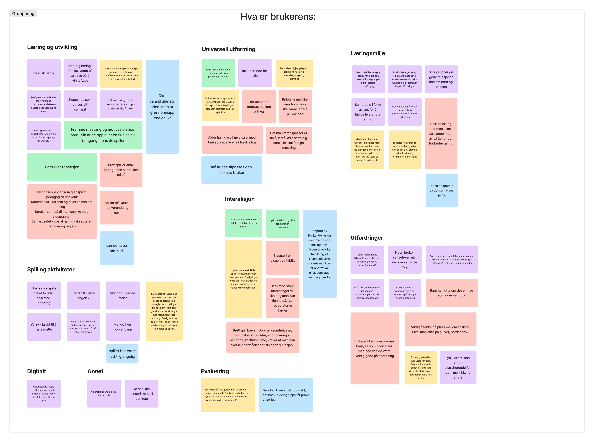

Om prosjektet
Å lage et brettspill med inkluderende spillmekanikker og store, lett håndterbare brikker. Det måtte være egnet for familier med barn med ulike ferdigheter eller for bruk i klasserom av spesialpedagoger. Spillet skal også fremme sosial interaksjon og læring.
Målgruppe
Familier med barn med ulike ferdigheter og spesialpedagoger.
Teamet og min rolle
Teamet besto av fire interaksjonsdesign studenter.
Tidslinje
2 måneder
Verktøy
Figma, Adobe Illustrator, Laserkutter, TinkerCad, Lamineringsmaskin
Designprosessen
Innsikt
Intervju
Vi gjennomførte semi-strukturerte intervjuer for å samle kvalitative innsikter om problemstillingen. Intervjuene ble delt inn i to hovedgrupper: de profesjonelle og brukerne.
Etter å ha gjennomført intervjuer med profesjonelle innen feltet, ble det klart at barn har individuelle forskjeller, ferdigheter og mestringsnivåer. For eksempel kan noen barn reagere på grunn av vanskeligheter med å uttrykke følelser, slite med konsentrasjon i støyende omgivelser eller foretrekke å leke alene eller med få mennesker. De profesjonelle fremhevet at konsentrasjonsvansker er vanlige blant barn.
Basert på denne brukerinnsikten bestemte vi oss for å fokusert på barn i alderen 5-12 år med utviklingsforstyrrelser. Ved å avgrense målgruppen kunne vi bedre tilpasse brettspillet til deres spesifikke behov.
Personas
For å sikre en god representasjon av brukergruppene utviklet vi tre personas:
- Barn: Reflekterer hvordan barn engasjerer seg med brettspill, med fokus på å designe spill som er både underholdende og støtter ulike utfordringer.
- Familiemedlem: Fokus på familievennlige spill som oppmuntrer både til samarbeid og vennskapelig konkurranse, samtidig som det tas hensyn til redusert fargesyn.
- Profesjonell: Fremhever hvordan spill kan brukes til å fremme læring, utvikle sosiale ferdigheter, og støtte pedagogiske metoder i klasserommet, engasjere elever og fremme kritisk tenkning.


Markus er en energisk og nysgjerrig gutt med ADHD som liker interaktive og visuelle spill. Hans far, Lars, har redusert fargesyn og foretrekker spill med tydelige symboler slik at han kan delta fullt ut. Marit, en spesialpedagog, bruker lignende spill i klasserommet for å fremme inkludering og samarbeid. Brettspillet er designet for å møte ulike behov, med fokus på Markus som hovedbruker gjennom mange av våre faser.
Idéutvikling og Konsepter
Vi brukte forskjellige metoder, inkludert Crazy 8 og moodboard, for å generere en rekke ideer. Vi endte til slutt med tre ulike konsepter og brukte en beslutningsmatrise for å avgjøre hvilket som scoret høyest. Det endelige resultatet inkluderte elementer fra alle konseptene.
Skisser

Prototyping
I prototypingfasen av brettspillet begynte vi med å lage tegninger for å skissere strukturen og de visuelle elementene. Disse tegningene ga oss en bedre forståelse av hvordan brikkene ville samhandle med hverandre. For å bringe ideene våre til live laget vi en fysisk mockup av farget papir, som tillot oss å eksperimentere mer med layouten og formen på brettet, samt høyden.


Vi laserkuttet alle brikkene, inkludert brettet, "smaragdene" og de ulike formene for spillet. Hver brikke ble designet for å gjøre spillet visuelt tiltalende og lett å bruke. Etter kutting malte vi hver brikke for å gi dem et personlig preg.
Endelig Produkt


"SMARAGD" er et spennende brettspill der målet er å samle flest smaragder i sparegrisen din. Spillere matcher mønstre med poengkort for å vinne smaragder.
- Antall spillere: 1-8
- Spilletid: 2 minutter per runde, med mulighet for å spille med eller uten tidsbegrensning
- Antall runder: 3 runder, eller så mange som ønskes
Den spilleren som har samlet flest smaragder etter alle rundene blir kåret til vinneren.
"SMARAGD" tilbyr utfordrende og engasjerende underholdning for både barn og voksne, og kan tilpasses for å møte forskjellige spillpreferanser og behov.
Testing
Spillet ble generelt godt mottatt, og barna syntes det var morsomt og engasjerende. De likte fargene, karakterene og spenningen ved å konkurrere og telle smaragdene etter hver runde. Noen hadde vanskeligheter med å forstå reglene i begynnelsen, men bilder og eksempler hjalp.
Noen barn ble frustrerte over å måtte sette sammen brikkene etter å lagt feil, eller over å ikke rekke å fullføre poengkortene i tide. De lærte imidlertid raskt reglene og ble bedre for hver runde. Pedagogen som var involvert, satte pris på spillets fleksibilitet, og likte at det kunne spilles på forskjellige måter.
Resultatene varierte mellom aldersgruppene. Den yngste gruppen (5-6 år gamle) trengte ofte veiledning og bekreftelse på at mønstrene deres var korrekte, da de ofte gjorde små feil eller manglet en brikke. Noen trengte også påminnelser om å plassere riktig antall smaragder og trekke nye kort.
Den eldre gruppen (7-10 år gamle) klarte seg stort sett på egen hånd, med å plassere smaragder, trekke nye kort og holde orden på brikkene sine. Til tross for mindre feil og utfordringer, uttrykte barna et sterkt ønske om å fortsette å spille.
Hva har jeg lært fra dette prosjektet
I dette prosjektet har jeg virkelig forstått verdien av regelmessig tilbakemelding og justeringer gjennom prosessen. Å dele opp prosjektet i forskjellige faser har vært til stor hjelp for å holde oversikt og strukturere arbeidet vårt. I tillegg har jeg fått innsikt i hvor utfordrende det kan være å designe noe for en målgruppe vi ikke hadde direkte tilgang til. Erfaringen og prosessen med å bryte ned et problem, utvikle et design og lage en testbar prototype har vært veldig lærerik. Det er utfordrende å lage et produkt fra bunnen av og sikre at alle komponentene henger sammen. Videre har det vært både spennende og givende å vurdere universell utforming, og det har gitt meg verdifull erfaring i å adressere fysiske, taktile og sensoriske utfordringer.
Viktige innsikter
En viktig lærdom er viktigheten av å involvere brukere og fagpersoner tidligere for å identifisere og løse problemer mer effektivt. Selv om arbeidet med dette prosjektet ga verdifulle innsikter i å designe uten direkte tilgang til målgruppen, ser jeg frem til fremtidige prosjekter med flere muligheter for brukerfeedback. Disse erfaringene har gitt meg innsikter som jeg vil ta med meg videre.